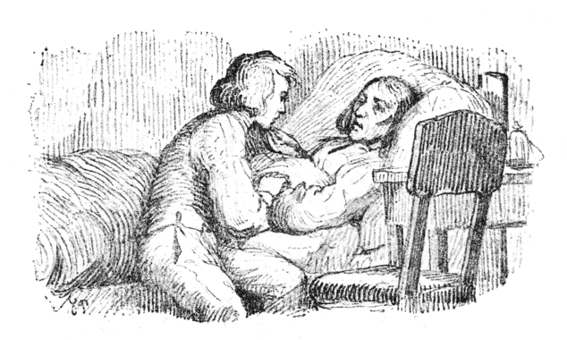
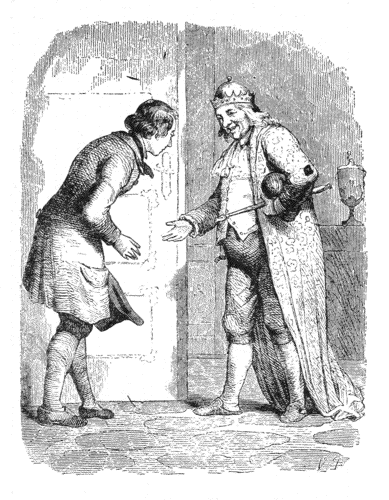
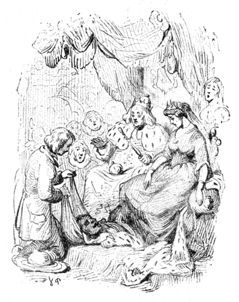
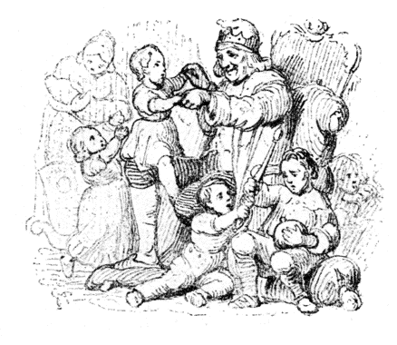

| 旅なかま | |
| アンデルセンハンス・クリスチャン | |
| (2012) | |
旅なかま
ハンス・クリスティアン・アンデルセン
楠山正雄訳

かわいそうなヨハンネスは、おとうさんがひどくわずらって、きょうあすも知れないほどでしたから、もうかなしみのなかにしずみきっていました。せまいへやのなかには、ふたりのほかに人もいません。テーブルの上のランプは、いまにも消えそうにまばたきしていて、よるももうだいぶふけていました。
「ヨハンネスや、おまえはいいむすこだった。」と、病人のおとうさんはいいました。「だから、世の中へでても、神さまがきっと、なにかをよくしてくださるよ。」
そういって、やさしい目でじっとみながら、ふかいため息をひとつつくと、それなり息をひきとりました。それはまるでねむっているようでした。でも、ヨハンネスは泣かずにいられません、この子はもう、この世の中に、父親もなければ、母親もないし、男のきょうだいも、女のきょうだいもないのです。かわいそうなヨハンネス。ヨハンネスは、寝台のまえにひざをついて、死んだおとうさんの手にほおずりして、しょっぱい涙をとめどなくながしていました。そのうち、いつか目がくっついて、寝台のかたい脚にあたまをおしつけたなり、ぐっすり寝こんでしまいました。
寝ているうちに、ヨハンネスは、ふしぎな夢をみました。お日さまとお月さまとがおりて来て＊礼拝をするところをみました。それから、なくなったおとうさんが、またげんきで、たっしゃで、いつもほんとうにうれしいときするようなわらい声をきかせました。ながい、うつくしい髪の毛の上に、金のかんむりをかぶったうつくしいむすめが、ヨハンネスに手をさしのべました。するとおとうさんが「ごらん、なんといいおよめさんをおまえはもらったのだろう。これこそ世界じゅうふたりとないうつくしいひとだ。」といいました。おや、とおもうとたん、ヨハンネスは目がさめました。うつくしい夢はかげもかたちもなくて、おとうさんは死んで、つめたくなって、寝台にねていました。たれひとりそこにはいません。なんてかわいそうなヨハンネス。
＊ヨセフまたひとつ夢をみてこれをその兄弟に述べていいけるは我また夢をみたるに日と月と十一の星われを拝せりと。（創世記三七ノ九）
次の週に、死人はお墓の下にうまりました。ヨハンネスはぴったり棺
につきそって行きました。これなりもう、あれほどやさしくしてくださったおとうさんの顔をみることはできなくなるのです。棺の上にばらばら土のかたまりの落ちていく音を、ヨハンネスはききました。いよいよおしまいに、棺の片はしがちらっとみえました。そのせつな、ひとすくい土がかかると、それもふさがってしまいました。みているうち、いまにも胸がちぎれそうに、かなしみがこみあげて来ました。まわりでうたうさんび歌がいかにもうつくしくきこえました。きくうちヨハンネスは、目のなかに涙がわきだして来ました。で、泣きたいだけ泣くと、かえって心持がはっきりして来ました。お日さまが、みどりぶかい木立
の上に晴ればれとかがやいて、それは「ヨハンネス、そんなにかなしんでばかりいることはないよ。まあ、青青とうつくしい空をごらん。おまえのとうさんも、あの高い所にいて、どうかこのさきおまえがいつもしあわせでいられるよう、神さまにおねがいしているところなのだよ。」と、いっているようでした。「ああ、ぼく、あくまでいい人になろう。」と、ヨハンネスはいいました。「そうすれば、また天国でおとうさんにあうことになるし、あえたら、どんなにたのしいことだろう。そのときは、どんなにたくさん、話すことがあるだろう、そうして、おとうさんからも、ずいぶんいろいろのことをおしえてもらえるだろう。天国のりっぱな所もたくさんみせてもらえるだろう。それは生きているとき、地の上の話を、たんとおとうさんはしてくださったものだった。ああ、それはどんなにたのしいことになるだろうな。」
ヨハンネスは、こうはっきりとじぶんにむかっていってみて、ついほほえましくなりました。そのそばから、涙はまたほほをつたわってながれました。あたまの上で小鳥たちが、とちの木の木立
のなかから、ぴいちくち、ぴいちくちさえずっていました。小鳥たちはおとむらいに来ていながら、こんなにたのしそうにしているのは、この死んだ人が、いまではたかい天国にのぼっていて、じぶんたちのよりももっとうつくしい、もっと大きいつばさがはえていることや、この世で心がけのよかったおかげで、あちらへいっても、神さまのおめぐみをうけて、いまではしあわせにくらしていることをよく知っているからでした。この小鳥たちが、緑ぶかい木立をはなれて、とおくの世界へとび立っていくところを、ヨハンネスはみおくって、じぶんもいっしょにとんでいきたくなりました。
けれども、さしあたりまず、大きな木の十字架
を切って、それをおとうさんのお墓に立てなければなりません。さて、夕がた、それをもっていきますと、どうでしょう、お墓にはまあるく砂が盛ってあって、きれいな花でかざられていました。それはよその知らない人がしてくれたのです。なくなったおとうさんはいい人でしたから、ひとにもずいぶん好かれていました。
さて、あくる日朝はやく、ヨハンネスは、わずかなものを包にまとめ、のこった財産の五十ターレルと二、三枚のシリング銀貨とを、しっかり腰につけました。これだけであてもなしに世の中へ出て行こうというのです。いよいよ出かけるまえ、まず墓地へいって、おとうさんのお墓におまいりして、主
のお祈をとなえてから、こういいました。
「おとうさん、さよなら。ぼくは、いつまでもいい人間でいたいとおもいます。ですから、神さまが、幸福にしてくださるように、たのんでください。」
ヨハンネスがこれからでていこうという野には、のこらずの花があたたかなお日さまの光をあびて、いきいきと、美しい色に咲いていました。そうして、風のふくままに、それが、がってんがってんしていました。「みどりの国へよくいらっしゃいましたね、ここはずいぶんきれいでしょう。」といっているようでした。けれど、ヨハンネスは、もういちどふりかえって、ふるいお寺におなごりをおしみました。このお寺で、ヨハンネスはこどものとき洗礼をうけました。日曜日にはきまって、おとうさんにつれられていって、おつとめをしたり、さんび歌をうたったりしました。そのとき、ふと、たかい塔の窓の所に、お寺の＊小魔
が、あかいとんがり頭巾をかぶって立っているのがみえました。小魔は目のなかに日がさしこむので、ひじをまげてひたいにかざしているところでした。ヨハンネスはかるくあたまをさげて、さよならのかわりにしました、小魔は赤い頭巾をふったり胸に手をあてたり、いくどもいくども、＊＊投げキッスしてみせました。それは、ヨハンネスのためにかずかす幸福のあるように、とりわけ、たのしい旅のつづくようにいのってくれる、まごころのこもったものでした。
＊家魔
。善魔で矮魔
の一種。ニース（Nis）。人間の家のなかに住み、こどもの姿で顔は老人。ねずみ色の服に赤い先の尖った帽子をかぶる。お寺にはこの仲間が必ずひとりずついて塔の上に住み、鐘をたたいたりするという。
＊＊じぶんの手にせっぷんしてみせて、はなれている相手にむかってその手をなげる形。
ヨハンネスは、これから、大きなにぎやかな世間へでたら、どんなにたくさん、おもしろいことがみられるだろうとおもいました。それで、足にまかせて、どこまでも、これまでついぞ来たこともない遠くまで、ずんずんあるいて行きました。通っていく所の名も知りません。出あうひとの顔も知りません。まったくよその土地に来てしまっていました。
はじめての晩は、野ッ原の、枯草を積んだ上にねなければなりませんでした。ほかに寝床といってはなかったのです。でも、それがとても寝ごこちがよくて、王さまだってこれほどけっこうな寝床にはお休みにはなるまいとおもいました。ひろい野中に小川がちょろちょろながれていて、枯草の山があって、あたまの上には青空がひろがっていて、なるほどりっぱな寝べやにちがいありません。赤い花、白い花があいだに点点
と咲いているみどりの草原は、じゅうたんの敷物でした。にわとこのくさむらとのばらの垣が、おへやの花たばでした。洗面所のかわりには、小川が水晶
のようなきれいな水をながしてくれましたし、そこにはあし
がこっくり、おじぎしながら、おやすみ、おはようをいってくれました。お月さまは、おそろしく大きなランプを、たかい青天井
の上で、かんかんともしてくださいましたが、この火がカーテンにもえつく気づかいはありません。これならヨハンネスもすっかり安心してねられます。それでぐっすり寝こんで、やっと目をさますと、お日さまはもうとうにのぼって、小鳥たちが、まわりで声をそろえてうたっていました。
「おはよう。おはよう。まだ起きないの。」
お寺では、かんかん、鐘がなっていました。ちょうど日曜日でした。近所のひとたちが、お説教をききに、ぞろぞろでかけていきます。ヨハンネスも、そのあとからついていって、さんび歌のなかまにまじって、神さまのお言葉をききました。するうち、こどものとき、洗礼をうけたり、おとうさんにつれられて、さんび歌をいっしょにうたった、おなじみぶかいお寺に来ているようにおもいました。
お寺のそとの墓地には、たくさんお墓がならんでいて、なかには高い草のなかにうずまっているものもありました。それをみると、ヨハンネスは、おとうさんのお墓も草むしりして、お花をあげるものがなければ、やがてこんなふうになるのだとおもいました。そこで、べったりすわって、草をぬいてやったり、よろけている十字架
をまっすぐにしてやったり、風でふきとんでいる花環
をもとのお墓の所へおいてやったりしました。そんなことをしながら、ヨハンネスはかんがえました。
「たぶん、おとうさんのお墓にも、たれかが、おなじことをしておいてくれるでしょう、ぼくにできないかわりに。」
墓地の門そとに、ひとり、年よりのこじきがいて、よぼよぼ、松葉づえにすがっていました。ヨハンネスは、もっていたシリング銀貨をやってしまいました。それですっかりたのしくなり、げんきになって、またひろい世の中へでていきました。［＃「。」は底本では欠落］
夕方、たいへんいやなお天気になりました。どこか宿をさがそうとおもっていそぐうち、夜になりました。でもどうやら、小山の上にぽっつり立っているちいさなお寺にたどりつきました。しあわせと、おもての戸があいていたので、そっとそこからはいりました。そうして、あらしのやむまでそこにいることにしました。
「どこかすみっこにかけさせてもらおう。」と、ヨハンネスはいって、なかにはいっていきました。
「なにしろひどくくたびれている、すこし休まずにはいられない。」
こういって、ヨハンネスはそこにどたんとすわって、両手をくみあわせて、晩のお祈をいいました。こうして、いつか知らないまに寝込んで、夢をみていました。そのあいだに、そとでは、かみなりがなったり、いなづまが走ったりしていました。
やっと目がさめてみると、もう真夜中
で、あらしはとうにやんで、お月さまが、窓からかんかん、ヨハンネスのねている所までさし込んでいました。ふとみると、本堂のまんなかに、死んだ人を入れた棺
が、ふたをあけたまま置いてありました。まだお葬式がすんでいなかったのです。ヨハンネスは正しい心の子でしたから、ちっとも死人をこわいとはおもいません。それに死人がなにもわるいことをするはずのないことはよくわかっていました。生きているわるいひとたちこそよくないことをするのです。ところへ、ちょうど、そういう生きているわるい人間のなかまがふたり、死人のすぐわきに来て立ちました。この死人はまだ埋葬
がすまないので、お寺にあずけておいてあったのです。それをそっと棺のなかに休ませておこうとはしずに、お寺のそとへほうりだしてやろうという、よくないたくらみをしに来たのです。死んだ人を、きのどくなことですよ。
「なんだって、そんなことをするのです。」と、ヨハンネスは声をかけました。「ひどい、わるいことです。エスさまのお名にかけて、どうぞそっとしてあげておいてください。」
「くそ、よけいなことをいうない。」と、そのふたりの男はこわい顔をしました。「こいつはおれたちをいっぱいはめたんだ。おれたちから金
を借りて、かえさないまま、こんどはおまけにおッ死んでしまやがったんだ。おかげで、おれたちの手には、びた一文かえりやしない。だからかたきをとってやるのだ。寺のそとへ、犬ッころのようにほうりだしてやるのだ。」［＃「」」は底本では欠落］
「ぼく、五十ターレル、お金があります。」と、ヨハンネスはいいました、「これがもらったありったけの財産ですが、そっくりあなた方に上げましょう。そのかわり、けっしてそのかわいそうな死人のひとをいじめないと、はっきり約束してください。なあに、お金なんかなくってもかまわない。ぼくは手足はたっしゃでつよい、それにしじゅう神さまが守っていてくださるとおもうから。」
「そうか。」と、そのにくらしい男どもはいいました。「きさま、ほんとうにその金
をはらうなら、おれたちもけっして手だしはしないさ、安心しているがいい。」
こういって、ふたりは、ヨハンネスのだしたお金をうけとって、この子のお人よしなのを大わらいにわらったのち、どこかへ出て行きました。でも、ヨハンネスは死人を、またちゃんと棺
のなかへおさめてやって、両手を組ませてやりました。さて、さよならをいうと、こんどもすっかりあかるい、いい心持になって、大きな森のなかへはいっていきました。
森のなかをあるきながらみまわすと、月あかりが木立をすけてちらちらしているなかに、かわいらしい妖女
たちのおもしろそうにあそんでいるのが目にはいりました。妖女たちはへいきでいました。それは、いま方はいって来たヨハンネスが、やさしい、いい人間だということをよく知っているからでした。わるい人間だけには、妖女のすがたがみたくとも見えないのです。まあ、かわいらしいといって、ほんとうに、指だけのせいもない妖女もいましたが、それぞれながい金いろの髪の毛を、金のくしですいていました。ふたりずつ組になって、木の葉や、たかい草の上にむすんだ大きな露の玉の上でぎったんばったんしていました。ときどきこの露の玉がころがりだすと、のっているふたりもいっしょにころげて、ながい草のじくのあいだでとまります。すると、ほかのちいさいなかまに、わらい声とときの声がおこりました。それはずいぶんおもしろいことでした、そのうち、みんな歌をうたいだしましたが、きいているうち、ヨハンネスは、こどものじぶんおぼえた歌を、はっきりおもいだしました。銀のかんむりをあたまにのせた大きなまだらぐもが、こちらの垣からむこうの垣へ、ながいつり橋や御殿を網で張りわたすことになりました。さて、そのうえにきれいな露がおちると、あかるいお月さまの光のなかでガラスのようにきらきらしました。こんなことがそれからそれとつづいているうち、お日さまがおのぼりになりました。すると、妖女たちは、花のつぼみのなかにはい込みました。朝の風が、つり橋やお城をつかむと、それなり大きなくもの網になって、空の上にとびました。
さて、ヨハンネスがいよいよ森を出ぬけようとしたとき、しっかりした男の声で、うしろからよびとめるものがありました。
「もしもし、ご同行
、どこまで旅をしなさる。」
「あてもなくひろい世間へ。」と、ヨハンネスはいいました。「父親もなし、母親もなし、たよりのないわかものです。でも神さまは、きっと守ってくださるでしょう。」
「わたしも、あてもなく世間へでていくところだ。」と、その知らないひとはいいました。「ひとつ、ふたりでなかまになりましょうか。」
「ええ、そうしましょう。」と、ヨハンネスもいいました。そこで、ふたりは、いっしょに出かけました。じき、ふたりは仲よしになりました。なぜといって、ふたりともいい人たちだったからです。ただ、ヨハンネスは、この知らない道づれが、じぶんよりもはるかはるかかしこい人だということに、気がつきました。この人は世界じゅうたいていあるいていて、なんだって話せないことはないくらいでした。
お日さまが、もうすいぶんたかくのぼったので、ふたりは大きな木の下に腰をおろして、朝の食事にかかかりました。そこへ、ひとりのおばあさんがあるいて来ました。いやはや、ずいぶんなおばあさん［＃「おばあさん」は底本では「おばさん」］
、まるではうように腰をまげてあるいて、やっとしゅもくづえにすがっていました。それでも、森でひろいあつめたたきぎをひとたば、せなかにのせていました。前掛が胸でからげてあって、ヨハンネスがふとみると＊しだの木のじくにやなぎの枝をはめた大きいむちが三本、そこからとびだしていました。で、ふたりのいるまえをよろよろするうち、片足すべらしてころぶとたん、きゃあとたかい声をたてました。きのどくに、このおばあさん、足をくじいたのですね。
＊しだの木は魔法の木。しだの木のむちに、やなぎの枝の柄をはめる。
ヨハンネスはそのとき、ふたりでおばあさんをかかえて、住居
までおくっていってやろうといいました。道づれの知らない人は、はいのうをあけて、小箱をだして、いや、このなかにこうやくがはいっている、これをつければ、すぐと足のきずがなおって、もとどおりになるから、ひとりでうちへかえれて、足をくじいたことなぞないようになるといいました。そして、そのかわりに、といっても、なあに、その前掛にくるんでいる三本のむちをもらうだけでいいのだがね、といいました。
「とんだ高い薬代
だの。」と、おばあさんはいって、なぜかみょうに、あたまをふりました。
それで、なかなか、このむちを手ばなしたがらないようすでしたが、くじいた足のままそこにたおれていることも、ずいぶんらくではないので、とうとう、むちをゆずることになりました。そのかわり、ほんのちょっぴりくすりをなすったばかりで、このおばあさん、すぐぴんと足が立って、まえよりもたっしゃに、しゃんしゃんあるいていきました。これはまさしく、このこうやくのききめでした。でも、それだけに、薬屋などでめったに手にはいるものではありません。
「そんなむちみたいなもの、なんにするんです。」と、ヨハンネスは、そこで旅なかまにたずねました。
「どうして、三本ともけっこうな草ぼうきさ。」と、相手はいいました。「こんなものをほしがるのは、わたしもとんだかわりものさね。」
さて、それからまた、しばらくの道のりを行きました。
「やあ、いけない、空がくもって来ますよ。」と、ヨハンネスはいいました。「ほら、むくむく、きみのわるい雲がでて来ましたよ。」
「いんや。」と、旅なかまはいいました。「あれは雲ではない。山さ。どうしてりっぱな大山さ。のぼると雲よりもたかくなって、澄んだ空気のなかに立つことになる。そこへいくと、どんなにすばらしいか。あしたは、もうずいぶんとおい世界に行っていることになるよ。」
でも、そこまでは、こちらでながめたほど近くはありませんでした。まる一日たっぷりあるいて、やっと山のふもとにつきました。見あげると、まっくろな森が空にむかってつっ立っていて、町ほどもありそうな大きな岩がならんでいました。それへのぼろうというのは、どうしてひととおりやふたとおり骨の折れるしごとではなさそうです。そこで、ヨハンネスと旅なかまは、ひと晩、ふもとの宿屋にとまって、ゆっくり休んで、あしたの山のぼりのげんきをやしなうことにしました。
さて、その宿屋の下のへやの、大きな酒場
には、おおぜい人があつまっていました。人形芝居をもって旅まわりしている男が来て、ちょうどそこへ小さい舞台をしかけたところでした。みんなはそれをとりまいて、幕のあくのを待つさいちゅうでした。ところで、いちばんまえの席は、ふとった肉屋のおやじが、ひとりでせんりょうしていましたが、それがまた最上の席でもあったでしょう。しかも大きなブルドッグが、それがまあなんとにくらしい、くいつきそうな顔をしていたでしょう。そやつが主人のわきに座をかまえて、いっぱし人間なみに、大きな目をひからしていました。
そのうち、芝居がはじまりましたが、それは王さまと女王さまの出てくる、なかなかおもしろい喜劇でした。ふたりの陛下は、びろうどの玉座に腰をかけて、どうしてなかなかの衣裳
もちでしたから、金のかんむりをかぶって、ながいすそを着物のうしろにひいていました。ガラスの目玉をはめて、大きなうわひげをはやした、それはかわいらしいでくのぼうが、どの戸口にも立っていて、しめたり、あけたり、おへやのなかにすずしい風のはいるようにしていました。どうもなかなかおもしろい喜劇で、いい気ばらしになりました。そのうち、人形の女王さまは立ち上がって、ゆかの上をそろそろあるきだしました。そのときまあ、れいのブルドッグが、いったい、なんとおもったのでしょうか、それをまた主人がおさえもしなかったものですから、いきなり、舞台にとびだして来て、おやというまもなく、女王さまのかぼそい腰をぱっくりかみました。とたん、「がりッがりッ」という音がきこえました。いやはや、おそろしいことでした。
かわいそうに、人形つかいの男はすっかりしょげて、女王さまの人形をかかえて、おろおろしていました。それは一座のなかでも、いちばんきりょうよしの人形でしたのに、にくにくしいブルドッグのために、あたまをかみきられてしまったのですからね。けれども、みんな見物が散ってしまったあと、ヨハンネスといっしょにみに来ていた旅なかまが、こんども、そのきずをなおしてやろうといいだしました。そこで、れいの小箱をあけて、おばあさんのくじいた足を立たせてやったあのこうやくを、人形にぬってやりました。人形は、こうやくをぬってもらうと、さっそくきずがきれいになおって、おまけに、じぶんで手足までたっしやにうごかせるようになりました。もう糸であやつることもいらなくなりました。人形はまるで、生きた人のようでした。ただ口がきけないだけです。人形芝居の親方は、どんなによろこんだでしょう。人形つかいがつかわないでも、この人形は勝手にじぶんでおどれるのです。これは、ほかの人形にまねのならないことでした。
夜中
になって、宿屋にいた人たちがのこらず寝しずまろうというとき、どこかでしくしくすすり泣く声がして、いつまでもやまないものですから、みんな気にして起きあがって、いったい、たれが泣いているのか見ようとしました。それがどうも人形芝居の舞台のほうらしいので、親方がすぐ行ってみますと、でくのぼうは、王さまはじめのこらずの近衛兵
がかさなりあって、そこにころがっていました。いまし方かなしそうにしくしくやっていたのは、このガラス目だまをきょとんとさせている人形なかまであったのです。それは、女王さまとおなじように、ちよっぴり、こうやくをぬってもらって、じぶんで勝手にうごけるようになりたいというのです。すると、女王さまもそばで、べったりひざをついて、そのりっぱな金かんむりをたかくささげながら「どうぞ、わたくしからこのかんむりをおとりあげください、そのかわり、夫にも、家来たちにも、どうぞお薬をぬっていただけますように。」といのりました。そうきいて、この人形芝居の親方は、きのどくに、人形たちが、ふびんでふびんでついいっしょに泣きだしました。親方はそこで、旅なかまにたのんで、あすの晩の興行
のあがりをのこらずさしあげます。どうぞ、せめて四つでも五つでも、なかできりょうよしな人形にだけでも、こうやくを塗ってやってはもらえますまいかと、くれぐれたのみました。ところで、旅なかまは、ほかのものは一切
いらない、わたしのほしいのは、そのおまえさんの腰につるしている剱だけだといいました。そうして、剱を手に入れると、六つの人形のこらずにこうやくをぬってやりました。すると人形たちは、さっそくおどりだしました。しかもその踊のうまいこと、そこにみていたむすめたちが、生きている人間のむすめたちのこらずが、すぐといっしょにおどりださずにはいられないくらいでした。するうち、御者と料理番のむすめも、つながっておどりだしました。給仕人もへや女中も、おどりだしました。お客たちも、いっしょにおどりだしました。とうとう十能
と火ばしまでが、組になっておどりだしました。でも、このひと組は、はじめひとはねはねると、すぐところんでしまいました。いやもう、ひと晩じゅう、にぎやかで、たのしかったことといったら。
つぎの朝、ヨハンネスは旅なかまとつれ立って、みんなからわかれて行きました。高い山にかかって、大きなもみの林を通っていきました。山道をずんずんのぼるうちに、いつかお寺の塔が、ずっと目のしたになって、おしまいにはそれが、いちめんみどりのなかにぽっつりとただひとつ、赤いいちごの実をおいたようにみえました。もうなん里もなん里もさきの、ついいったことの［＃「ことの」は底本では「ことのの」］
ない遠方までがみはらせました。――このすばらしい世界に、こんなにもいろいろとうつくしいものを、いちどに見るなんということを、ヨハンネスは、これまでに知りませんでした。お日さまは、さわやかに晴れた青空の上からあたたかく照りかがやいて、峰と峰とのあいだから、りょうしの吹く角笛
が、いかにもおもしろく、たのしくきこえました。きいているうちにもう、うれし涙が目のなかにあふれだしてくると、ヨハンネスは、おもわずさけばずにはいられませんでした。
「おお、ありがたい神さま、こんないいことをわたしたちにしてくださって、この世界にあるかぎりのすばらしいものを、惜しまずみせてくださいますあなたに、まごころのせっぷんをささげさせてください。」
旅なかまも、やはり、手を組んだまま、そこに立って、あたたかなお日さまの光をあびているふもとの森や町をながめました。ちょうどそのときふと、あたまの上で、なんともめずらしく、かわいらしい声がしました。ふたりがあおむいてみると、大きいまっ白なはくちょう
が一羽、空の上に舞っていました。そのうたう声はいかにもうつくしくて、ほかの鳥のうたうのとまるでちがっていました。でも、その歌が、だんだんによわって来たとき、鳥はがっくりうなだれました。そうして、それは、ごくものしずかに、ふたりの足もとに落ちて来ました。このうつくしい鳥は死んで、そこに横たわっているのです。
「こりゃあ、そろってみごとなつばさだ。」と、旅なかまはいいました。「どうだ、このまっ白で大きいこと、この鳥のつばさぐらいになると、ずいぶんの金高
だ、これは、わたしがもらっておこう。みたまえ、剱をもらって来て、いいことをしたろうがね。」
こういって、旅なかまは、ただひとうち、死んだはくちょう
のつばさを切りおとして、それをじぶんのものにしました。
さて、ふたりは山を越えて、またむこうへなん里もなん里も旅をつづけていくうちに、とうとう、大きな町のみえる所に来ました。その町にはなん百とない塔がならんで、お日さまの光のなかで、銀のようにきらきらしていました。町のまんなかには、りっぱな大理石のお城があって、赤い金で屋根が葺
けていました。これが王さまのお住居
でした。
ヨハンネスと旅なかまとは、すぐ町にはいろうとはしないで、町の入口で宿をとりました。ここで旅のあかをおとしておいて、さっぱりしたようすになって、町の往来をあるこうというのです。宿屋のていしゅの話では、王さまという人は、心のやさしい、それはいいひとで、ついぞ人民に非道
をはたらいたことはありません。ところがその王さまのむすめというのが、やれやれ、なさけないことにひどいわるもののお姫さまだというのです。きりょうがすばらしくよくて、世にはこんなにもしとやかな人があるものかとおもうほどですが、それがなんになるでしょう、このお姫さまがいけない魔法つかいで、もうそのおかげで、なんどとなくりっぱな王子が、いのちをなくしました。――それはたれでもお姫さまに結婚を申しこむおゆるしが出ていて、それは王子であろうとこじきであろうと、たれでもかまわない、というのですが、そのかわり、お姫さまのおもっている三つのことをたずねられたら、それをそっくりあてなければならないのです。そのかわり、あたればお姫さまをおよめにして、おとうさまの王さまのおかくれになったあとでは、［＃「、」は底本では「。」］けっこうこの国の王さまにもなれる。けれどもその三つともあたらなければ、首をしめられるか、切られるかしなければなりません。このうつくしいお姫さまが、こんなにもひどい、わるものなのでした。おとうさまの老王さまも、そのことでは、ずいぶんつらがっておいでなのですが、そんなむごたらしいことをするなととめるわけにいかないというのは、いつかお姫さまのむこえらみについては、けっして口だししないといいだされたため、お姫さまはなんでもじぶんのしたいままにしてよいことになっているからです。それで、あとから、あとから、ほうぼうの国の王子が代る代るやつて来て、なぞをときそこなっては、首をしめられたり、切られたりしました。そのくせ、まえもっていいきかされていることですから、なにも申込をしなければいいのですが、やはりお姫さまをおよめにたれもしたがりました。お年よりの王さまは、かさねがさねこういうかなしい不幸なことのおこるのを、心ぐるしくおもって、年に一日、日をきめて、のこらずの兵隊をあつめて、ともども神さまのまえにひれ伏して、どうか王女が善心にかえるようにとせつないおいのり［＃「おいのり」は底本では「おのり」］
をなさるのですが、をなさるのですが、お姫さまはどうしてもそれをあらためようとはしないのです。この町で年よりの女たちが、ブランデイをのむにも、黒くしてのむのは、それほどかなしがっている心のしょうこをみせるつもりでしょう。まあ、そんなことよりほかにしょうがないのですよ。
「いやな王女だなあ。」と、ヨハンネスはいいました。「そんなのこそ、ほんとうにむちでもくらわしたら、ちっとはよくなるかもしれない。わたしがそのお年よりの王さまだったら、とうにひどくこらしめてやるところなのに。」
そのとき、そとで、町の人たちが、万歳万歳とさけぶ声がしました。ちようど王女のお通りなのです。なるほど、王女はじつに目のさめるようなうつくしさで、このお姫さまがわるい人間だということをわすれさせるほどでしたから、ついたれも万歳をさけばずにはいられなかったのです。十二人のきれいな少女がおそろいの白絹の服で、手に手に金のチューリップをささげてもち、まっ黒な馬にのって、両わきにしたがいました。王女ご自身は、雪とみまがうような白馬
に、ダイヤモンドとルビイのかざりをつけてのっていました。お召の乗馬服は、純金の糸を織ったものでした、手にもったむちは、お日さまの光のようにきらきらしました。あたまにのせた金のかんむりは、大空のちいさな星をちりばめたようですし、そのマントはなん千とないちょちょう
のはねをあつめて、縫いあわせたものでした。そのくせ、そんなにしてかざり立てたのこらずの衣裳
も、王女みずからのうつくしさにはおよびませんでした。
ヨハンネスは、王女をみたせつな、顔いちめんかっと赤くほてって、ただひとしずくの血のしたたりのようになりました。もうひと言もものがいえなくなりました。まあ、この王女は、おとうさんのなくなった晩、ヨハンネスが夢でみた、あの金のかんむりのうつくしいむすめにそっくりなのです。あんまりうつくしいので、いやおうなしに、いきなり大好きにさせられてしまいました。この人が、じぶんのかけたなぞが、そのとおりにとけないといって、ひとの首をしめたり、きらせたりするわるい魔法つかいの女だなんて、そんなはずがあるものか。「たれでも、それは、この上ないみじめなこじきでも、お姫さまに結婚を申し込むことはかまわないということだ。よし、ぼくもお城へでかけよう。
「どうしたっていかずにはいられないもの。」
ところでみんなは、口をそろえて、そんなまねはしないがいい、ほかのものと同様、うきめをみるにきまっているといいました。
旅なかまも、やはり、おもいとまるようにいいきかせました。でも、ヨハンネスは、大じょうぶ、うまくやってみせますといって、くつと上着のちりをはらって、顔と手足をあらって、みごとな金髪
にくしを入れました。それからひとりで町へでていって、お城の門まで来ました。
「おはいり。」ヨハンネスが戸をたたくと、なかで、お年よりの王さまがおこたえになりました。――ヨハンネスがあけてはいると、ゆったりした朝着のすがたに、縫いとりした上ぐつをはいた王さまが、出ておいでになりました。王冠をあたまにのせて、王しゃくを片手にもって、王さまのしるしの地球儀の珠
を、もうひとつの手にのせていました。

「ちょっとお待ちよ。」と、王さまはいって、ヨハンネスに手をおだしになるために、珠を小わきにおかかえになりました。ところが、結婚申込に来た客だとわかると、王さまはさっそく泣きだして、しゃくも珠も、ゆかの上にころがしたなり、朝着のそでで、涙をおふきになるしまつでした。おきのどくな老王さま。
「それは、およし。」と、王さまはおっしゃいました。「「ほかの［＃「ほかの」は底本では「ほのか」］
もの同様、いいことはないよ。では、おまえにみせるものがある。」
そこで、王さまは、ヨハンネスを、王女の遊園
につれていきました。なるほどすごい有様です。どの木にもどの木にも、三人、四人と、よその国の王さまのむすこたちが、ころされてぶら下がっていました。王女に結婚を申し込んで、もちだしたなぞをいいあてることができなかった人たちです。風がふくたんびに、死人の骨がからから鳴りました。それを、小鳥たちもこわがって、この遊園
には寄りつきません。花という花は、人間の骨にいわいつけてありました。植木ばちには、人間のしゃりッ骨が、うらめしそうに歯をむきだしていました。まったく、これが王さまのお姫さまの遊園とはうけとれない、ふうがわりのものでした。
「ほらね、このとおりだ。」お年よりの王さまは、おっしゃいました。「いずれおまえも、ここにならんでいる人たちとそっくりおなじ身の上になるのだから、これだけはどうかやめておくれ。わたしになさけないおもいをさせないでおくれ。わしは心ぐるしくてならないのだからな。」
ヨハンネスは、この心のいいお年よりの王さまのお手にせっぷんしました。そうして、わたくしはうつくしいお姫さまを心のそこからしたっています。きっと、うまくいくつもりですといいました。
そういっているとき、当のお姫さまが、侍女
たちのこらず引きつれて、馬にのったまま、お城の中庭へのり込んで来ました。そこで、王さまも、ヨハンネスもそこへいってあいさつしました。お姫さまはそれこそあでやかに、ヨハンネスに手をさし出しました。それで、よけい好きになりました。世間の人たちがうわさするように、このひとがそんなわるい魔法つかいの女なぞであるわけがありません。それから、みんなそろって広間へあがると、かわいいお小姓
たちが、くだもののお砂糖漬だの、くるみのこしょう入りのお菓子だのをだしました。でも、王さまはかなしくて、なんにもお口に入れるどころではなく、それに、くるみのこしょう入お菓子はかたくて、お年よりには歯が立ちませんでした。
さて、ヨハンネスは、そのあくる日、またあらためてお城へくることになりました。そこに審判官
と評定官
のこらずがあつまって、問答
をきくことになっていました。はじめの日うまく通れば、そのあくる日また来られます。でも、これまでは、もう最初の日からうまくいったためしがないのです。そうなれば、いやでもいのちひとつふいにしなくてはなりません。
ヨハンネスは、いったいどうなるかなんのという心配はしません。ただもううきうきと、うつくしいお姫さまのことばかりかんがえていました。そうしておめぐみぶかい神さまが、きっとたすけてくださるとかたく信じていました。ではどういうふうにといっても、それはわかりません。そんなことはかんがえないほうがいいとおもっていました。そこで、宿へかえる道道も、往来をおどりおどりくると、旅なかまが待ちかまえていました。
ヨハンネスは、王女がやさしくもてなしてくれたこと、いかにもうつくしいひとだということ、それからそれととめどなく話しました。あしたはいよいよお城へでかけて、みごとになぞをいいあてて、運だめしをするのだといって、もうそればかり待ちこがれていました。
けれども、旅なかまは、かぶりをふって、うかない顔をしていました。
「わたしは、とてもきみを好いているのだ。」と、旅なかまはいいました。「だから、おたがいこれからもながくいっしょにいたいとおもうのに、これなりおわかれにならなくてはならない。ヨハンネス、きみはきのどくなひとだよ。わたしは泣きたくてならないが、こうしているのも今夜かぎりだろうから、せっかくのきみのたのしみをさまたげるでもない。愉快にしていようよ。大いに愉快にね。泣くことなら、あす、きみのでていったあとで、存分
に泣けるからな。」
お姫さまのところへ、あたらしい結婚の申し込み手がやって来たことを、もうさっそく町じゅうの人たちが知っていました。それで、たれも大きなかなしみにおそわれました。芝居は木戸をしめたままです。お菓子屋さんたちは申しあわせたように、小ぶたのお砂糖人形を黒い、喪
のリボンで巻きました。王さまは、お寺で坊さんたちにまじって、神さまにお祈をささげました。どこもかしこもしめっぽいことでした。それはどうせ、ヨハンネスだけに、これまでのひとたちとちがったいい目が出ようとは、たれにもおもえなかったからでした。
その夕方、旅なかまは、大きなはちにいっぱい、くだもののお酒のポンスをこしらえて来て、それでは大いに愉快にやって、ひとつ王女殿下の健康をいわって乾杯
しようといいました。ところが、ヨハンネスは、コップに二はいのむと、もうすっかりねむくなって、目をあけていることができなくなり、そのままぐっすり寝込んでしまいました。旅なかまは、ヨハンネスをそっといすからだき上げて寝床に入れました。夜がふけて、そとはまっくらやみになりました。旅なかまは、れいのはくちょう
から切りとった二枚の大きなつばさを、しっかりと、肩にいわいつけました。そうして、あのころんで足をくじいたおばあさんからもらった三本のむちのなかの、いちばんながいのをかくしにつっこむと、窓をあけて、町の丘から、お城のほうへ、ひらひらとんでいきました。それから王女の寝べやの窓下に来て、そっと片すみにしのんでいました。
町はひっそりしていました。ちょうど時計は十二時十五分まえをうったところです。ふと窓があいたとおもうと、王女はながい白マントの上に、まっ黒なつばさをつけて、ひらりと舞い上がりました。町の空をつっきって、むこうの大きな山のほうへとんでいきました。ところで、旅なかまは、王女に気づかれないように、からだをみえなくしておいて、そのあとを追いながら、王女をむちでうちました。うたれるそばから、ひどく血がでました。ほほう、たいへんな空の旅があったものですね。風が王女のマントを、それこそ大きな舟の帆のように、いっぱいにふくらませて行く上から、ほんのりとお月さまの光がすけてみえました。
「おお、ひどいあられだ、ひどいあられだ。」
王女は、むちのあたるたんびにこういいました。なに、ぶたれるのはあたりまえです。それでもやっと山まで来て、とんとん戸をたたきましたとたんに、ごろごろひどいかみなりの音がして、山はぱっくり口をあきました。王女はなかへはいりました。旅なかまもつづいてはいりました。でも、姿がみえなくしてあるので、たれも気がつきません。ふたりがながい廊下
をとおっていくと、両側の壁が奇妙にきらきら光りました。それは、なん千とない火ぐもが、壁の上をぐるぐるかけまわって、火花のように光るためでした。それから、金と銀でつくってある大広間にはいりました。そこには、ひまわりぐらい大きい赤と青の花が、壁できらきらしていました。でもその花をつむことはできません。というのは、その花のじくがきみのわるい毒へびで、花というのも、その大きな口からはきだすほのおだからです。天井
には、いちめん、ほたるが光っているし、空いろのこうもりが、うすいつばさをばたばたさせていました。じつになんともいえないかわったありさまでした。ゆかのまん中に、王さまのすわるいすがひとつすえてあって、これを四頭の馬のがい骨が背中にのせていました。その馬具はまっ赤な火ぐもでした。さて、そのいすは、乳いろしたガラスで、座ぶとんというのも、ちいさな黒ねずみがかたまって、しっぽをかみあっているものでした。いすの上に、ばらいろのくもの巣でおった天蓋
がつるしてあって、それにとてもきれいなみどり色したかわいいはえ
が、宝石をちりばめたようにのっていました。ところで、王冠をかぶって、王しゃくをかまえて、にくらしい顔で、王さまのいすにじいさんの魔法つかいが、むんずと座をかまえていました。魔法つかいはそのとき、王女のひたいにせっぷんすると、すぐわきのりっぱないすにかけさせました。やがて音楽がはじまりました。大きな黒こおろぎが、ハーモニカをふいて、ふくろうが太鼓のかわりに、はねでおなかをたたきました。それは、とぼけた音楽でした。かわいらしい、豆粒のような小鬼どもは、ずきんに鬼火をつけて、広間のなかをおどりまわりました。こんなにみんないても、たれにも旅なかまの姿はみえませんでしたから、そっと王さまのいすのうしろに立ってて、なにもかもみたりきいたりしました。さて、そこへひとかど、もったいらしく気どって、魔法御殿のお役人や女官たちが、しゃなりしゃなり出て来ました。でも正しくもののみえる目でみますと、すぐとばけの皮があらわれました。それはほうきの柄にキャベツのがん首をすげたばけもので、それが縫いとりした衣裳
を着せてもらって、魔法つかいの魔法で、息を吹き込んでもらって、動いているだけでした。どのみち、こけおどかしにしていたことで、なにがどうだってかまったことはありません。
しばらくダンスがあったあとで、王女は魔法つかいに、あたらしく、結婚の申し込み手の来たことを話しました。それで、あしたの朝お城へやってくるが、相手をためすには、なにを心におもっていることにしようか、相談をかけました。
「よろしい、おききなさいよ。」と、魔法つかいはいいました。「まあ、なんでもごくたやすいことをかんがえるのさ。すると、かえって、わからないものだ。そう、じぶんのくつ
のことでもかんがえるのだなあ。それならまずあたるまい。それで首をきらせてしまう。ところで、あすの晩くるとき、その男の目だまをもってくることを、わすれないようにな。久しぶりでたべたいから。」
王女は、ていねいにあたまをさげて、目だまはわすれずにもって来ますといいました。魔法つかいが山をあけてやりますと、王女はお城へとんでかえりました。でも、旅なかまはどこまでもあとについていって、したたかむちでぶちました。王女は、あられがひどい、ひどいとこぼし、こぼし、一生けんめいにげて、やっと寝べやの窓から、なかへはいりました。旅なかまも、それなり宿のほうへとんでかえっていきますと、ヨハンネスは、まだねむったままでしたから、そっとつばさをぬいで、じぶんも床にはいりました。なにしろ、ずいぶんつかれていたでしょうからね。
さて、あくる日まだくらいうちから、ヨハンネスは目をさましました。旅なかまもいっしょに起きて、じつにゆうべはふしぎで、お姫さまと、それからお姫さまのくつの夢をみたという話をして、だから、ためしに、お姫さま、あなたはごじぶんのくつ
ことをおもって、それをきこうとなさるのでしょうといってごらん、といいました、これは、山で魔法つかいのいったことばを、そっくりきいていっているだけなのですが、そんなことはおくびにもださず、ただ、王女がじぶんのくつ
のことをかんがえていやしないか、きいてみよとだけいったのです。
「ぼくにしてみれば、なにをどうこたえるのもおなじです。」と、ヨハンネスはいいました。「たぶんあなたが夢でごらんになったとおりでしょう。それはいつだって、やさしい神さまが、守っていてくださるとおもって、安心しているのですからね。けれど、おわかれのごあいさつだけはしておきましょうよ。答をまちがえれば、もう、二どとおめにかかれないんですから。」
そこで、ふたりはせっぷんしあいました。やがて、ヨハンネスは、町へでて、お城にはいって行きました。大広間には、もういっぱい人があつまっていました。審判官
はよりかかりのあるいすに、からだをうずめて、ふんわりと鳥のわた毛を入れたまくらを、あたまにかっていました。なにしろこのひとたちは、たくさんにものをかんがえなくてはならないのでしてね。そのとき、お年よりの王さまは立ち上がって、白いハンカチを目におあてになりました。するうち、お姫さまがはいって来ました。きのうみたよりまた一だん立ちまさってうつくしく、一同にむかって、にこやかにあいさつしました。でも、ヨハンネスには、わざわざ手をさしのべて、「あら、おはようございます。」といいました。
さて、ヨハンネスがいよいよ、お姫さまのかんがえていることをあてるだんになりました。まあ、そのとき、お姫さまは、なんという人なつこい目で、ヨハンネスをみたことでしょう。ところが、ヨハンネスの口から、ただひとこと「くつ」とでたとき、お姫さまの顔はさっとかわって、白墨
ように白くなりました。そうして、からだじゅう、がたがたふるえていました。けれどもう、どうにもなりません。みごと、ヨハンネスはいいあてたのですもの。
ほほう、ほほう。お年よりの王さまは、どんなにうれしかったでしょう。あんまりうれしいので、みごとなとんぼをひとつ、王さまはきっておみせになりました。すると、みんなもうれしがって手をたたいて、王さまと、それから、はじめてみごとにいいあてたヨハンネスを、はやし立てました。
旅なかまも、まずうまくいったときいて、ほっとしました。ヨハンネスは、でも、手をあわせて、神さまにお礼をいいました。そして、神さまは、あとの二どもきっと守ってくださるにちがいないとおもいました。さて、あくる日もつづいてためされることになっていました。
その晩も、ゆうべのようにすぎました。ヨハンネスがねむっているあいだに、旅なかまは、王女のあとについて、山までとぶ道道、こんどはむちも二本もちだして来て、まえよりもひどく王女をぶちました。旅なかまはたれにも見られないで、なにもかも耳に入れて来ました。王女は、あしたは手袋のことをかんがえるはずでしたから、そのとおりをまた、夢にみたようにして、ヨハンネスに話しました。ヨハンネスはこんどもまちがいなくいいあてたので、お城のなかはよろこびの声があふれました。王さまがはじめしておみせになったように、こんどは御殿じゅうが、そろってとんぼをきりました。そのなかで王女は、ソファに横になったなり、ただひとことも物をいいませんでした。さて、こうなると、三どめも、みごとヨハンネスにいいあてられるかどうか、なにごともそれしだいということになりました。それさえうまくいけば、うつくしいお姫さまをいただいた上、お年よりの王さまのおなくなりなったあとは、そっくり王国をゆずられることになるのです。そのかわり、やりそこなうと、いのちをとられたうえ、魔法つかいが、きれいな青い目だまをぺろりとたべてしまうでしょう。
その晩も、ヨハンネスは、はやくから寝床にはいって、晩のお祈をあげて、それですっかり安心してねむりました。ところが、旅なかまは、ねむるどころではありません。れいのつばさをせなかにいわいつけて、剱を腰につるして、むちも三本ともからだにつけて、それから、お城へとんでいきました。
そとは、目も鼻もわからないやみ夜でした。おまけにひどいあらしで、屋根の石かわらはけしとぶし、女王の遊園
のがい骨のぶら下がっている木も、風であしのようにくなくなにまがりました。もうしきりなし稲光
がして、かみなりがごろごろ、ひと晩じゅうやめないつもりらしく、鳴りつづけました。やがて、窓がぱあっとあいて、王女は、とびだしました。その顔は「死」のように青ざめていましたが、このひどいお天気を、それでもまだ荒れかたが足りないといいたそうにしていました。王女の白マントは風にあおられて、空のなかを舞いながら、大きな舟の帆のように、くるりくるりまくれ上がりました。ところで、旅なかまは、れいの三本のむちで、びしびしと、それこそ地びたにぽたりぽたり、血のしずくがしたたりおちるほどぶちましたから、もうあぶなく途中でとべなくなるところでした。でもどうにかこうにか、山までたどりつきました。
「どうもひどいあられでしたの。」と、王女はいいました。「こんなおてんきにそとへでたのははじめて。」
「その代り、こんどは、よすぎてこまることもあるさ。」と、魔法つかいはいいました。
王女はそのとき、二どまでうまくいいあてられたことを話して、あしたまたうまくやられて、いよいよヨハンネスが勝ちときまると、もう二度と山へは来られないし、魔法もつかえなくなるというので、すっかりしょげかえっていました。
「こんどこそはあたらないよ。」と、魔法つかいはいいました。「なにかその男のとてもかんがえつかないことをおもいつこう。万一、これがあたるようなら、その男はわしよりずっとえらい魔法つかいにちがいなかろう。だが、まあ愉快にやろうよ。」
そういって、魔法つかいは、王女の両手をとって、ちょうどそのへやにいた小鬼や鬼火などと輪をつくって、いっしょにおどりました。すると、壁の赤ぐもまでが、上へ下へとおもしろそうにとびまわって、それはまるで火花が火の子をとばしているようにみえました。ふくろうは太鼓をたたくし、こおろぎは口ぶえをふく、黒きりぎりすは、ハーモニカをならしました。どうしてなかなかにぎやかな舞踏会
でした。
みんなが、たっぷりおどりぬいてしまうと、王女は、もうここらでかえりましょう、お城が大さわぎになるからといいました。そこで、魔法つかいは、せめて途中までいっしょにいられるように、そこまで送っていくといいました。
そこで、ふたりは、ひゅうひゅう、ひどいあらしのふくなかへとびだした。旅なかまは、ここぞと三本のむちで、ふたりのせなかもくだけよとばかり、したたかぶちのめしました。さすがの魔法つかいも、これほどはげしいあられ空に、そとへでたのははじめてでした。さて、お城ちかくまで来たとき、いよいよわかれぎわに、魔法つかいは王女の耳のはたに口を寄せて、
「わしのあたまをかんがえてこらん。」といいました。けれども、旅なかまは、それすらのこらず耳にしまい込んでしまいました。そうして、王女が窓からすべりこむ、魔法つかいが引っかえそうとするとたん、ぎゅッと魔法つかいのながい黒ひげをつかむがはやいか、剱をひきぬいて、そのにくらしい顔をした首を、肩のつけ根からずばりと切りおとしました。まるで、相手にこちらの顔をみるすきさえあたえなかったのです。さて、その首のないむくろは、みずうみの魚に投げてやりましたが、首だけは、水でよくあらって、絹のハンケチにしっかりくるんで、宿までかかえて、もってかえって、ゆっくり床
に休んで寝ました。
そのあくる朝、旅なかまは、ヨハンネスに、ハンケチの包をさずけて、王女が、いよいよじぶんのかんがえているものはなにかといって問いかけるまで、けっして、むすび目をほどいてはいけないといいました。
お城の大広間には、ぎっしり人がつまって、それはまるで、だいこんをいっしょにして、たばにくくったようでした。評定官
は、れいのとおり、ながながといすによりかかって、やわらかなまくらをあたまにあてがっていました。老王さまは、すっかり、あたらしいお召ものに着かえて、金のかんむりもしゃくも、ぴかぴかみがき立てて、いかめしいごようすでした。それにひきかえ、お姫さまのほうは、もうひどく青い顔をして、おとむらいにでもいくような、黒ずくめの服でした。
「なにを、わたしはかんがえていますか。」
王女は、ヨハンネスにたずねました。
すぐ、ヨハンネスは、ハンケチのむすび目をほどきました。すると、いきなり、魔法つかいの首が、目にはいったので、たれよりもまずじぶんがぎょっとしました。あんまり、すごいものをみせられて、みんなもがたがたふるえだしました。そのなかで、王女はひとり、石像のようにじいんとすわり込んだなり、ひとこともものがいえませんでした。それでも、やっと立ち上がって、ヨハンネスに手をさしのべました。なにしろ、みごとにいいあてられてしまったのです。王女は、もう、たれの顔をみようともしないで、大きなため息ばかりついていました。

「さあ、あなたは、わたしの夫
です。今晩、式をあげましょう。」
「そうしてくれると、わしもうれしい。」と、お年よりの王さまはいいました。「ぜひ、そういうことにしよう。」
みんなは、万歳をとなえました。近衛
の兵隊は、音楽をやって、町じゅうねりあるきました。お寺の鐘は鳴りだしますし、お菓子屋のおかみさんたちは、お砂糖人形の黒い喪
のリボンをどけました。どこにもここにも、たいへんなよろこびが、大水のようにあふれました。三頭の牛のおなかに、小がもやにわとりをつめたまま、丸焼にしたものを、市場のまん中にもちだして、たれでも、ひと切れずつ、切ってとっていけるようにしました。噴水からは、とびきり上等のぶどう酒がふきだしていました。パン屋で一シリングの堅パンひとつ買うと、大きなビスケットを六つ、しかも乾
ぶどうのはいったのを、お景物
にくれました。
晩になると、町じゅうあかりがつきました。兵隊はどんどん祝砲を放しますし、男の子たちはかんしゃく玉をぱんぱんいわせました。お城では、のんだり、たべたり、祝杯をぶつけあったり、はねまわったり、紳士も、うつくしい令嬢たちも、組になって、ダンスをして、そのうたう歌が遠方まできこえて来ました。
ダンス輪おどり大すきな
みんなきれいなむすめたち、
まわるよまわるよ糸車。
くるりくるりと踊り子むすめ、
おどれよ、はねろよ、いつまでも、
くつのかかとのぬけるまで。
さて、ご婚礼はすませたものの、お姫さまは、まだ、もとの魔法つかいのままでしたから、ヨハンネスをまるでなんともおもっていませんでした。そこで、旅なかまは心配して、れいのはくちょう
のつばさから三本のはねをぬきとって、それと、ほんのちよっぴり、くすりの水を入れた小びんをヨハンネスにさずけました。そうして、おしえていうのには、水をいっぱいみたした大きなたらいを、お姫さまの寝台のまえにおく、お姫さまが、知らずに寝台へ上がるところを、うしろからちょいと突けばお姫さまは水のなかにおちる。たらいの水には、前もって、三本の羽をうかして、くすりの水を二、三滴たらしておいて、その水に三どまで、お姫さまをつけて、さて、引き上げると、魔法の力がきれいにはなれて、それからは、ヨハンネスをだいじにおもうようになるだろうというのです。
ヨハンネスは、おしえられたとおりにしました。王女は水に落ちたとき、きゃっとたかいさけび声を立てたとおもうと、ほのおのような目をした、大きな、黒いはくちょう
になって、おさえられている手の下で、ばさばさやりました。二どめに、水からでてくると、黒いはくちょう
はもう白くなっていて、首のまわりに、黒い輪が、二つ三つのこっているだけでした。ヨハンネスは、心をこめて神さまにお祈をささげながら、三ど、はくちょう
に水をあびせました。そのとたん、はくちょう
はうつくしいお姫さまにかわりました。お姫さまは、まえよりもなおなおうつくしくなって、きれいな目にいっぱい涙をうかべながら、魔法をといてくれたお礼をのべました。
その次の朝、老王さまは、御殿じゅうの役人のこらずをひきつれて出ておいでになりました。そこで、お祝をいいにくるひとたちが、その日はおそくまで、あとからあとからつづきました。いちばんおしまいに来たのは、旅なかまでしたが、もうすっかり旅じたくで、つえをついて、はいのうをしょっていました。ヨハンネスは、その顔をみると、なんどもなんどもほおずりして、もうどうか旅なんかしないで、このままここにいてください。こんなしあわせな身分になったのも、もとはみんなあなたのおかげなのだからといいました。けれども、旅なかまは、かぶりをふって、でも、あくまでやさしい、人なつこいちょうしでいいました。
「いいや、いいや、わたしのかえっていく時が来たのだ。わたしはほんの借をかえしただけだ。きみはおぼえていますか、いつか、わるものどものためにひどいはずかしめを受けようとした死人のことを。［＃「。」は底本では欠落］あのとききみは、持っていたもののこらず、わるものどもにやって、その死人をしずかに墓のなかに休ませてくれましたね。その死人が、わたしなのですよ。」
こういうがはやいか、旅なかまの姿は消えました。
さて、ご婚礼のおいわいは、まるひと月もつづきました。ヨハンネスと王女とは、もうおたがいに、心のそこから好きあっていました。老王さまは、もう毎日、たのしい日を送っておいでになりました。かわいらしいお孫さんたちを、かわるがわるおひざの上にのせて、かってにはねまわらせたり、しゃくをおもちゃにしてあそばせたりなさいました。ヨハンネスはかわりに、王さまになって、王国のこらずおさめることになりました。

底本：「新訳アンデルセン童話集第一巻」同和春秋社
１９５５（昭和30
）年7
月20
日初版発行
※「旧字、旧仮名で書かれた作品を、現代表記にあらためる際の作業指針」に基づいて、底本の表記をあらためました。
※底本中、＊で示された語句の訳註は、当該語句のあるページの下部に挿入されていますが、このファイルでは当該語句のある段落のあとに、５字下げで挿入しました。
入力：大久保ゆう
校正：秋鹿
２００６年1
月18
日作成
青空文庫作成ファイル：
このファイルは、インターネットの図書館、青空文庫（http://www.aozora.gr.jp/）で作られました。入力、校正、制作にあたったのは、ボランティアの皆さんです。